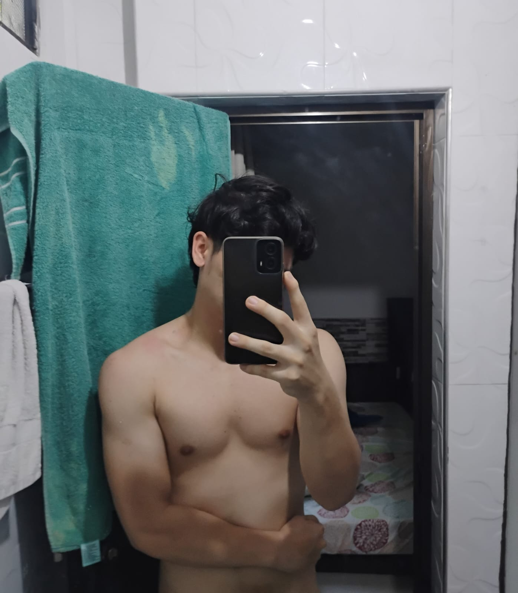

Como había dicho, aquí vamos a poner algunos videos que me salieron mientras estaba haciendo este proyecto y que, al momento de verlos, ni siquiera bastó con ver todo el video, sino que unos segundos fueron suficientes para hacerme recordar a ti, Andy. Espero que te gusten estos videos.
Este es el primer video y me hizo acordar de ti, primero porque me dio risa y segundo porque demuestra que con algo tan simple como un beso el personaje se prende o se emocionan. Ahora imagina que nosotros estamos a la distancia: ni me puedes tocar, ni besar, ni nada, y aun así me sigues dejando como todos los personajes de ese video.
Este video literalmente me identifica porque últimamente por las noches no he podido dormir bien porque estoy muy ocupado y simplemente no me da sueño. Y pues, mientras intento dormirme, siempre pienso en ti. Hay momentos en los que hasta reviso el chat por si me escribiste. Te doy un abrazo a distancia y siempre pido que mañana tengas un día mucho mejor.
En este video muestras lo que siempre he querido hacer contigo: un abrazo. Hay muchos momentos en los que necesitamos un abrazo de la persona más importante, o sea tú, como hoy 15/09, que por culpa de alguien casi me caigo de la moto. Solo quiero llegar, abrazarte y decirte que estoy bien; o cuando no estoy bien, simplemente abrazarte y sé que, si lo hago, me alegrarías el día; o cuando estoy feliz, abrazarte para compartirte mi felicidad; o solo darte un abrazo cuando lo necesites, darte un simple abrazo, un abrazo que abraza el alma.
Este video muestra un poema, un poema que te lo dedico. Yo te extraño, Andy; aunque digas que no te pienso, yo siempre pienso en ti. A la hora que me levanto, pienso en cómo habrás amanecido o si descansaste bien; cuando estoy en clases, pienso en qué estarás haciendo, si te está yendo bien o mal; cuando como, me pregunto si tendrás ganas de comer para ver si te compro algo o me pregunto si ya habrás comido; en mis clases otra vez, pensando en si te duele algo o tienes alguna molestia; en el gym, mientras cargo las pesas, pienso en ti, en tus ojos, en tu hermosura; pienso en ti en las noches, en tu voz, en si ya llegaste a tu casa, si tuviste un buen día o un mal día. Yo siempre te pienso, te pienso como la mujer más importante en mi vida.
En este video no hay mucho que decir, esos son todos los planes contigo, agregando uno más: Plan K: Si ninguno de los otros planes funciona, pues, ¿qué más da, cierto? Seguir ahí, intentando que seas feliz, siempre estar para ti, cada vez que necesites algo estar ahí, y llegará el momento en que tú me dejes de hablar o simplemente encuentres otra persona que te haga feliz, y desaparecer poco a poco, siendo feliz porque tú lo estás.
Este video muestra un paisaje, un paisaje hermoso, como lo que tú me haces sentir, un lugar seguro y tranquilo, en el cual pueda acostarme sin que nadie me vea o me juzgue, un lugar en el que pueda decir cómo fue mi día y pasar mi tiempo, o así es como yo te veo, como un paisaje, mi paisaje perfecto.
Solo voy a decir una cosa de este video: tú eres mi Gwen.
Lo único que tengo que decir es que te amo mucho, Andy.
Por último, te voy a dejar la foto que más te gustó en su momento. ¿Por qué? No sé, solo lo pensé jajaja.
